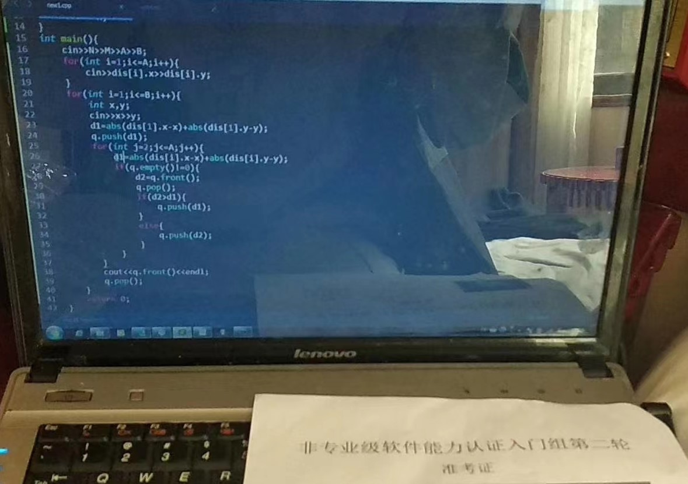

Oct 17, 2023
OI回忆录&与代码的不解之缘（上）
假嘟！是一张十分荒谬的牵手图（要不，先猜猜哪只爪子是我的？文末有答案）
摄于三年前——CSP-S 2020 复赛期间
和这张图一样荒谬的，是我的OI生涯
粗略一算，一不小心就过去了五年；机房还在原处，面孔却已陌生；过往已成云烟，新的故事……
梦开始的地方
开始之前，笔者想问一个小小问题：倘若不让你用电脑打游戏，那么你还会用电脑做些什么呢？
Uniya 很小的时候，家里就有了两台笔记本电脑（搭载奔腾-M处理器的 联想旭日125 和搭载 酷睿2处理器 的 联想3000系列G430A ），那时候还是用电话拨号上网的，滴滴的声音怪神奇的呢。在那时，画画、电视、夜晚的甜汤和椰子糖便构成了 Uniya 的世界。平时照着画的东西不太多，于是Uniya开始网上冲浪，寻找能画的东西。（其实不太记得怎么学会的上网啦~）只记得在蓝天白云绿草地的 Windows XP 系统上，有一个蓝色的大大的e的图标，那是 IE浏览器，打开之后是门户首页，我记得那时还是Hao123，因为喜欢汽车，于是就点开汽车之家，随性的点开一辆车开始画！（顺带一提，电脑上有个PhotoShop7.0，打开之后觉得是奇怪的东西，于是叉掉，点开了画图(●’◡’●)）
后来，Uniya学会了逛论坛，在房车还是一个新兴事物之时，Uniya看到了许多网友自行改造房车，环游中国，看到了许多优秀的作品。
就这样，时间拨动到小学二、三年级，在舅舅的帮助下，Uniya注册了第一个QQ账号~（但是同学早早就注册了，Uniya很晚才用上QQ）彼时，在同龄人的影响下，大家时兴着网页游戏，比如赛尔号、4399、QQ农场……你没猜错！Uniya小的时候也玩的——
这样的好日子不久，某日被母上大人发现在玩网页游戏，Uniya遂遭受一顿竹板炒肉（x），在这之后母上大人就立下规矩：可以看电脑但是不能打游戏！也许是被打怕了？也许是太乖了？总之，Uniya在这之后便没有打过网页游戏了（以至于初三参加比赛时，Joker_M指着我两台笔记本电脑大声吐槽：什么垃圾电脑，4399都玩不了= =）
回到开头的问题，Uniya的答案是：那就折腾电脑吧！于此，便是梦开始的地方！（以下时间线是并排的）
-
在某次不经意的闲聊中，Uniya知道了网站这种东西，于是开始从百度搜索，开始学习前端知识；很有趣，在小小的Notepad++编辑器里，对着W3CSchool教程，尝试着每一个Html和Css代码；接着开始接触了PHP语言，不过那时候真的很笨，很多东西是Uniya所不能够了解的
-
在三年级年末的那个暑假，Uniya开始搭建了属于自己的第一个Blog，使用了WordPress博客系统；那时候每天上网冲浪，在贴吧里找各种免费的资源，各种免费的主机，免费的域名；（后来发觉，免费的才是最贵的！倘若母上大人肯支出一些些费用，也许就不用浪费太多的时候在寻找这些资源上了）
-
后来，Uniya试了很多的博客系统，WordPress、Typecho、Z-Blog……还有PHP下的很多项目：著名的DedeCMS（织梦CMS）、Discuz论坛系统、PHPwind论坛系统……还有Hexo和Hugo这两个静态博客系统。
-
随着对网站搭建的逐渐深入，Uniya接触到了Nginx、Apache等等这些底层工具，与此同时正值云服务厂商的大喷发，阿里云、腾讯云开始推出许多免费试用的东西；Uniya开始了解Virtual Host、Virtual Private Server、Linux这些系统构架等等的东西，Github、Coding这两个代码托管服务，以及一些和网站相关的网络协议。
-
在这三年里，Uniya见证了论坛时代的落幕、响应式设计的兴起、微信H5平台的大火、微信公众号的起步，平台建设重心由Web转向Phone。
-
Uniya的第一次折腾是三年级的时候给家里的 G430A 拆机清灰，第二次是在 G430A 上安装轻量化桌面的Ubuntu+Windows双系统，接着开始，Uniya尝试了无数系统，从Windows XP Windows Vista Windows 7 Windows 8.1 Windows 10早期版本；
-
记得某一次，在使用家里电脑的时候，不小心中了一个整蛊软件的招，电脑被锁了密码——还是家里最重要的电脑，Uniya依稀记得，父上大人急得差点把我揍了一顿；Uniya知道怎么修好，其实只要一个WindowsPE的U盘清除密码就好啦，但是没有现成的，还需要下载；但是父上大人和母上大人都不相信我（毕竟怎么会有人觉得一个小屁孩能修好电脑呢对吧，只有破坏电脑的份！），于是他们花了30块钱叫了一位修电脑的技术员，然后当那个技术员来了之后，正巧我的PE也制作好了，于是出现一个很神奇的事情——Uniya 当着那个技术员的面把那个电脑修好了:-D
-
后来，家里人觉得 Uniya 总是搞坏电脑，于是他们丢给了 Uniya 一台二手的Dell Vostro A840，Uniya在这台电脑上第一次安装了 ArchLinux，折腾了无数事物。
-
在五六年级的时候，Uniya学会了PPT软件，帮语文老师制作了老舍《草原》的PPT；学会使用PhotoShop，设计一些网站的LOGO；
-
五年级时，在某次冲浪的时候，有幸加入一个叫可萌工作室的组织！在这里，Uniya接触到了二次元，第一次接触到初音未来，东方project等等。他们用VB6写了一个程序，用来下载漫画（鱼竿漫画下载器）。工作室的站长大家习惯叫WD，某次逛WD的Blog时，发现了一些神奇的东西；不过Uniya当时只是浅浅的问了，这便是Uniya第一次接触到OI相关的内容。
-
可惜，Uniya 的语文真的不好，对于上面的内容 Uniya 没有办法同父母去很好的阐述！于是 Uniya 某段时间总是被误解作沉迷电脑。对于上述的事物，父母也持反对态度。
命运的齿轮开始转动
到了初中，Uniya 来到了县城的私立学校——是当时在县城最好的学校
在这里，Uniya 接触到了形形色色的同学和老师，发生了许多有趣的故事！
Uniya 虽然讨厌这个学校的某些阴暗的事物，可是 Uniya 会记得发生在这个学校的一切的有趣和美好的事与人！
初一上，学校开设了第二课堂，自然而然的，我参加了信息技术兴趣班班，在这里遇到了我的第一个信息老师——钟老师。
在某一次交谈中，Uniya 在钟老师的口中再一次接触到了信息学竞赛的事物
受限于家里的父母还不会网购，同时初一的学习尤其的紧张，只能作罢。
初一下，学校开设了信息竞赛班，靠着还不错的期末数学成绩，Uniya 开始了信息竞赛的学习
如果你问我，为什么想搞信竞？
我的回答是，兴趣使然！
似乎大部分人都认为 Uniya 选择了信竞是因为宣讲会上的所说的保送，于是每当遇到 Uniya 时总会问：你学这个信息竞赛有什么用吗——只不过，Uniya 骗过了所有人，Uniya一开始的想法很简单：只是想找到一个合法化写代码的理由去搪塞来自父母的质问——只不过后来，Uniya 深深迷上了OI罢了。
这个世界，做什么事情都需要一个很功利的理由？谁告诉你的，我不信。
有着小学自学前端网页的基础，Uniya 学习基础语法十分轻松。
记得第一节课，同班参加的同学C，用中文符号敲代码，结果编译不了，一直很急躁（原谅我不厚道的笑了）
第二节课，同班一起参加的五位同学就剩下两位了
第一次淘汰时，Uniya因为期中考忘记填数学填空题答题卡痛失30分了QwQ，于是教练就以文化课成绩差把我踢掉了（x）
那段时间还挺无奈的= =班主任：你犯什么浑
再后来，另外一位同学因为觉得递归和递推难以理解，也退出了
某次周六，我又去了一次机房，找到老师说明自己想要听课的想法，教练同意了！
于是又继续了，这次注册了洛谷，自学了递归和递推、深搜，接着追赶进度。
很快，NOIP 2018如期而至。
虽然考前真的认真学了很多初赛知识点，但是出了考场，选择题是一个没对，代码填空全对（那时候初赛还没改革）（大家都懵逼了，这真的不是点错技能点吗），头回就吃了闭门羹。
还好，一切都刚开始。
接下来的日子里，Uniya的日常变成了赶作业，晚上抽空去机房写题（x），每天在教学楼和综合楼来回奔波；寒假暑假的时候就和小伙伴们留在学校集训。集训的日子还是很有趣的！早上很早就起来，天都还没亮，到操场背书；白天坐在机房里写题；晚上在机房赶作业。
到了初三，NOIP因为政策原因取消了，改换为 CSP-J 2019；所幸，初赛还不错，将近90分的成绩足够入围复赛了（cmh就很惨，第一天通知入围，第二天通知分数线修改变成了未入围）；接下去，就是准备复赛了！
刷了百来道题目，打了几场模拟赛，发现自己还是好弱┭┮﹏┭┮
头回出远门，真不习惯（）看到了好多火车头
比赛前一天晚上，Joker_M指着我两台笔记本电脑大声吐槽：什么垃圾电脑，4399都玩不了= =
比赛那天上午，还特意敲了背包的模板来的！

结果上去就写了两个题然后弃疗。
下场之后发现最后一题T4是一个多重背包，还是一个原题！（场上没看出来当场晕厥┭┮﹏┭┮）喜提140分，普及二等跑路。
初中学习OI的日子就结束了，Uniya 匆匆忙忙的从机房跑回了教室，开始了中考的准备。
记不得太清楚原话了，记得是在初二的寒假集训，我们几个在和坐班的钟老师边赶作业边聊天，他说：等到你们上了高中，上了大学，你们会发现你们的思维和现在又不一样了。
记得那时候对高中部的印象：怎么高中学习比初中还轻松哇
记得同学W在机房里看缘之空，然后隔壁的同学Z看得脸红用一只手挡住了
记得同学L在高中部集训的时候全屏看B站，结果被老校长抓了个正着QwQ
记得有个鬼才在机房里不能用QQ，然后就想出了局域网搭建网页聊天室的方法
…
前进的道路有各式各样的阻力，不过还好，坚持下去了。
“是阿，一条道走到黑”
左边的爪子是我的(●’◡’●)
怎么有人比赛完吃烧烤也能发疯QwQ
咳咳，是正常同学关系┭┮﹏┭┮各位要想歪了我也没办法┑(￣Д ￣)┍